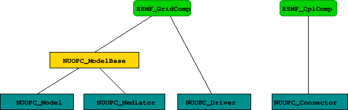
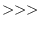
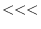

Next: 3 API Up: NUOPC_refdoc Previous: 1 Description Contents
The NUOPC Layer is implemented in Fortran on top of the public ESMF Fortran API.
The NUOPC utility routines form a very straightforward Fortran API, accessible through the NUOPC Fortran module. The interfaces only use native Fortran types and public ESMF derived types. In order to access the utility API of the NUOPC Layer, user code must include the following two use lines:
use ESMF use NUOPC
The NUOPC generic components are implemented as a collection of Fortran modules. Each module implements a single, well specified set of standard ESMF_GridComp or ESMF_CplComp methods. The nomenclature of the generic component modules starts with the NUOPC_ prefix and continues with the kind: Driver, Model, Mediator, or Connector. The four kinds of generic components implemented by the NUOPC Layer are:
The user code accesses the desired generic component(s) by including a use line for each one. Each generic component defines a small set of public names that are made available to the user code through the use statement. At a minimum the SetServices method is made public. Some of the generic components define additional public routines and labels as part of their user interface. It is recommended to rename entries of an imported generic component module, such as SetServices, in the local scope as part of the use association to prevent potential name clashes.
use NUOPC_<GenericComp>, &
<GenericComp>SS => SetServices
A generic component is used by user code to implement a specialized version of the generic component. The user component derives from the generic component code by implementing its own public SetServices routine that calls into the generic SetServices routine via the NUOPC_CompDerive() method. Typically this should be the first call made before doing anything else. It is through this mechanism that the deriving component inherits functionality that is implemented in the generic component. The example below shows how a specific model component is implemented, deriving from the generic NUOPC_Model:
use NUOPC_Model, &
modelSS => SetServices
subroutine SetServices(model, rc)
type(ESMF_GridComp) :: model
integer, intent(out) :: rc
! derive from NUOPC_Model
call NUOPC_CompDerive(model, modelSS, rc=rc)
! specialize model
!... calls to NUOPC_CompSpecialize() here
end subroutine
After the call to NUOPC_CompDerive() in a component's SetServices() method, the component is connected to all of the generic code provided by NUOPC for the respective component kind. In order to function properly, e.g. as an atmosphere model, ocean model, driver, etc., the component must be specialized.
The NUOPC_CompSpecialize() method is used to link specific user provided routines to pre-defined NUOPC specialization points. The labels of the pre-defined specialization points are use associated named constants made available by the respective generic component module. The naming of all pre-defined specialization labels starts with the label_ prefix, and is followed by a short intent of the specialization. E.g. label_Advertise refers to the specialization point responsible for advertising Fields in the import- and exportStates of the component.
There are pre-defined specialization labels for Initialize, Run, and Finalize phases. Section 2.4.1 discusses the semantic labeling of specializations in greater detail. Lists of all pre-defined specialization labels for Initialize, Run, and Finalize, for each of the generic NUOPC component kinds, are provided at the beginning of the respective API sections. (Driver: 3.1, Model: 3.3, Mediator: 3.4, Connector: 3.5)
The following code snippet shows a full specialization of NUOPC_Model, using three specialization labels:
use NUOPC_Model, &
modelSS => SetServices
subroutine SetServices(model, rc)
type(ESMF_GridComp) :: model
integer, intent(out) :: rc
rc = ESMF_SUCCESS
! derive from NUOPC_Model
call NUOPC_CompDerive(model, modelSS, rc=rc)
if (ESMF_LogFoundError(rcToCheck=rc, msg=ESMF_LOGERR_PASSTHRU, &
line=__LINE__, &
file=__FILE__)) &
return ! bail out
! specialize model
call NUOPC_CompSpecialize(model, specLabel=label_Advertise, &
specRoutine=Advertise, rc=rc)
if (ESMF_LogFoundError(rcToCheck=rc, msg=ESMF_LOGERR_PASSTHRU, &
line=__LINE__, &
file=__FILE__)) &
return ! bail out
call NUOPC_CompSpecialize(model, specLabel=label_RealizeProvided, &
specRoutine=Realize, rc=rc)
if (ESMF_LogFoundError(rcToCheck=rc, msg=ESMF_LOGERR_PASSTHRU, &
line=__LINE__, &
file=__FILE__)) &
return ! bail out
call NUOPC_CompSpecialize(model, specLabel=label_Advance, &
specRoutine=Advance, rc=rc)
if (ESMF_LogFoundError(rcToCheck=rc, msg=ESMF_LOGERR_PASSTHRU, &
line=__LINE__, &
file=__FILE__)) &
return ! bail out
end subroutine
The user implemented specialization routines must follow the NUOPC interface definition.
subroutine SpecRoutine(comp, rc)
type(ESMF_*Comp) :: comp
integer, intent(out) :: rc
end subroutine
Here type(ESMF_*Comp) either corresponds to type(ESMF_GridComp) for Models, Mediators, and Drivers, or type(ESMF_CplComp) for Connectors.
Components that are derived from a generic component may choose to only specialize certain aspects, leaving other aspects unspecified. This allows a hierarchy of generic components to be implemented with a high degree of code re-use. The variable level of specialization supports the very differing user needs. Figure 1 depicts the inheritance structure of the standard generic components implemented by the NUOPC Layer. There are two trees, one is rooted in ESMF_GridComp, while the other is rooted in ESMF_CplComp.
|
 |
The NUOPC Layer uses standard metadata on Fields to guide the decision making process that is implemented in generic code. The generic NUOPC_Connector component, for instance, uses the StandardName Attribute to construct a list of matching Fields between the import and export States. The NUOPC Field Dictionary provides a software implementation of a controlled vocabulary for the StandardName Field Attribute. It also associates each registered StandardName with CanonicalUnits. Currently the NUOPC Layer uses the CanonicalUnits entry to verify that Fields are provided in their canonical units. In the future, this entry may help support automatic unit conversion among exchanged fields.
The NUOPC Field Dictionary is set up by loading its content from a YAML 1.2 file. See section 2.2.1 for details.
Users can extend the dictionary by adding entries (field definitions or synonyms) to the YAML file, or by calling the NUOPC_FieldDictionaryAddEntry() interface.
In a given NUOPC application, the NUOPC Field Dictionary can be set up by calling the NUOPC_FieldDictionarySetup() method to read in a properly-formatted YAML file. This feature is intended to improve the interoperability of codes that use the NUOPC Layer, as it allows a broader scientific community to contribute to the growth and upkeep of a common NUOPC Field Dictionary file shared among different Earth System Models. At this time, an initial version of the NUOPC Field Dictionary file is available through the dedicated GitHub repository: https://github.com/ESCOMP/NUOPCFieldDictionary, hosted within the Earth System Community Modeling Portal (ESCOMP).
A NUOPC Field Dictionary YAML file is codified as a YAML map (an unordered association of unique keys to values) with only one key: field_dictionary. The value associated with this key is itself a YAML map that should include the mandatory key entries (pointing to the complete set of dictionary entries), and may include the optional keys: version_number, last_modified, institution, contact, source, and description. These optional keys are intended to hold information about the file itself and are currently ignored by the NUOPC Layer.
Entries in the NUOPC Field dictionary are organized as YAML lists of maps. List items under the entries keyword must be indented and preceded with a hyphen (-).
A dictionary entry fully defines a Field if it includes both the standard_name and canonical_units keys and their associated values. This entry may also include a brief narrative describing the Field, stored as the value of the optional key description.
Synonyms can be defined by adding separate entries that include both the alias key, associated with either a single synonym (YAML scalar, e.g. alias: <name>) or a comma-separated list of synonyms within square brackets (YAML flow sequence, e.g. alias: [<name1>, <name2>, ...]), and the standard_name key associated with the original Field name to be substituted. The original Field name must be fully defined in the dictionary file. While adding one alias keyword to a Field definition dictionary entry is allowed and will be parsed by the NUOPC Layer, it is recommended that all synonyms be included as separate entries.
A NUOPC Field dictionary sample file is included below.
field_dictionary:
version_number: 0.0.1
last_modified: 2018-03-14T11:01:19Z
institution: National ESPC, CSC & MCL Working Groups
contact: esmf_support@ucar.edu
source: https://github.com/ESCOMP/NUOPCFieldDictionary
description: Community-based dictionary for shared coupling fields
entries:
- standard_name: air_pressure
canonical_units: Pa
description: Air pressure
- standard_name: air_temperature
canonical_units: K
description:
Bulk temperature of the air,
not the surface (skin) temperature
- alias: p
standard_name: air_pressure
- alias: [ t, temp ]
standard_name: air_temperature
A version of the NUOPC Field Dictionary is preloaded by the NUOPC Layer at start-up, and, at this time, consists of the entries show in the table below. The value of the StandardName Attribute in each of these entries complies with the Climate and Forecast (CF) conventions guidelines.
| StandardName | CanonicalUnits |
| air_pressure_at_sea_level | Pa |
| magnitude_of_surface_downward_stress | Pa |
| precipitation_flux | kg m-2 s-1 |
| sea_surface_height_above_sea_level | m |
| sea_surface_salinity | 1e-3 |
| sea_surface_temperature | K |
| surface_downward_eastward_stress | Pa |
| surface_downward_heat_flux_in_air | W m-2 |
| surface_downward_northward_stress | Pa |
| surface_downward_water_flux | kg m-2 s-1 |
| surface_eastward_sea_water_velocity | m s-1 |
| surface_net_downward_longwave_flux | W m-2 |
| surface_net_downward_shortwave_flux | W m-2 |
| surface_northward_sea_water_velocity | m s-1 |
The NUOPC Layer makes extensive use of the ESMF Attribute class to implement metadata on Components, States, and Fields. ESMF Attribute Packages (or AttPacks for short) are used to build an Attribute hierarchy for each object.
In some cases the lowest level NUOPC AttPack contains a nested AttPack defined by ESMF. For all objects, the highest level of the NUOPC AttPack hierarchy is implemented with convention="NUOPC", purpose="Instance". The public NUOPC Layer API allows a user to add Attributes to the highest AttPack hierarchy level.
Note that some of the Attribute names in the following table are longer than the table column width. In these cases the Attribute name had to be broken into multiple lines. When that happens, a hyphen shows up to indicate the line break. The hyphen is not part of the Attribute name!
| Attribute name | Definition | Controlled vocabulary |
| Kind | String value indicating component kind. | Driver |
| Verbosity | String value, converted into an integer, and interpreted as a bit field. The lower 16 bits (0-15) are reserved to control verbosity of the generic component implementation. Higher bits are available for user level verbosity control. bit 0: Intro/Extro of methods with indentation. bit 1: Intro/Extro with memory info. bit 2: Intro/Extro with garbage collection info. bit 3: Intro/Extro with local VM info. bit 4: Intro/Extro with ImportState info. bit 5: Intro/Extro with ExportState info. bit 6: Log hierarchy protocol details. bit 8: Log Initialize phase with , , and currTime. bit 9: Log Run phase with , , and currTime. bit 10: Log Finalize phase with , , and currTime. bit 11: Log info about data dependency during initialize resolution. bit 12: Log run sequence execution. bit 13: Log Component creation and destruction. bit 14: Log State creation and destruction. |
0, 1, 2, ... "off" = 0 (default), "low": some verbosity, bits: 0, 8, 9, 10, 13 "high": more verbosity, bits: 0, 4, 5, 6, 8, 9, 10, 11, 12, 13, 14 "max": all lower 16 bits |
| Profiling | String value, converted into an integer, and interpreted as a bit field. The lower 16 bits (0-15) are reserved to control profiling of the generic component implementation. Higher bits are available for user level profiling control. bit 0: Top level profiling of Initialize phases. bit 1: Specialization point profiling of Initialize phases. bit 2: Additional profiling of internals of Initialize phases. bit 3: Top level profiling of Run phases. bit 4: Specialization point profiling of Run phases. bit 5: Additional profiling of internals of Run phases. bit 6: Top level profiling of Finalize phases. bit 7: Specialization point profiling of Finalize phases. bit 8: Additional profiling of internals of Finalize phases. bit 9: Leading barrier for Initialize phases. bit 10: Leading barrier for Run phases. bit 11: Leading barrier for Finalize phases. bit 12: Run sequence iteration events. |
0, 1, 2, ... "off" = 0 (default), "low": Top level profiling. "high": Top level, specialization point profiling, and additional profiling of internals. "max": All lower 16 bits set. |
| CompLabel | String value holding the label under which the component was added to its parent driver. | no restriction |
| InitializePhaseMap | List of string values, mapping the logical NUOPC initialize phases, of a specific Initialize Phase Definition (IPD) version, to the actual ESMF initialize phase number under which the entry point is registered. | IPDvXXpY=Z, where XX = two-digit revision number, e.g. 01, Y = logical NUOPC phase number, Z = actual ESMF phase number, with Y, Z > 0 and Y, Z < 10 |
| RunPhaseMap | List of string values, mapping the logical NUOPC run phases to the actual ESMF run phase number under which the entry point is registered. | label-string=Z, where label-string can be chosen freely, and Z = actual ESMF phase number. |
| FinalizePhaseMap | List of string values, mapping the logical NUOPC finalize phases to the actual ESMF finalize phase number under which the entry point is registered. | label-string=Z, where label-string can be chosen freely, and Z = actual ESMF phase number. |
| InternalInitializePhaseMap | List of string values, mapping the logical NUOPC initialize phases, of a specific Initialize Phase Definition (IPD) version, to the actual ESMF initialize phase number under which the entry point is registered. | IPDvXXpY=Z, where XX = two-digit revision number, e.g. 01, Y = logical NUOPC phase number, Z = actual ESMF phase number, with Y, Z > 0 and Y, Z < 10 |
| NestingGeneration | Integer value enumerating nesting level. | 0, 1, 2, ... |
| Nestling | Integer value enumerating siblings within the same generation. | 0, 1, 2, ... |
| InitializeDataResolution | String value indicating whether the resolution loop is disabled or enabled. | false, true |
| InitializeDataComplete | String value indicating whether all initialize data dependencies have been satisfied. | false, true |
| InitializeDataProgress | String value indicating whether progress is being made resolving initialize data dependencies. | false, true |
| HierarchyProtocol | String value specifying the hierarchy protocol. | "PushUpAllExportsAndUnsatisfiedImports" - activates field mirroring of all exports and unsatisfied imports. By default use reference sharing for the mirrored fields and geom objects. This is the default behavior without having HierarchyProtocol set. "ConnectProvidedFields"- no field mirroring, only connect to externally provided fields in the import- and exportStates. "Explorer" - like the default, but do not use reference sharing. All other values currently disable the hierarchy protocol. |
Note that some of the Attribute names in the following table are longer than the table column width. In these cases the Attribute name had to be broken into multiple lines. When that happens, a hyphen shows up to indicate the line break. The hyphen is not part of the Attribute name!
| Attribute name | Definition | Controlled vocabulary |
| Kind | String value indicating component kind. | Model |
| Verbosity | String value, converted into an integer, and interpreted as a bit field. The lower 16 bits (0-15) are reserved to control verbosity of the generic component implementation. Higher bits are available for user level verbosity control. bit 0: Intro/Extro of methods with indentation. bit 1: Intro/Extro with memory info. bit 2: Intro/Extro with garbage collection info. bit 3: Intro/Extro with local VM info. bit 4: Intro/Extro with ImportState info. bit 5: Intro/Extro with ExportState info. bit 8: Log Initialize phase with , , and currTime. bit 9: Log Run phase with , , and currTime. bit 10: Log Finalize phase with , , and currTime. bit 11: Log info about data dependency during initialize resolution. bit 12: Log run sequence execution. |
0, 1, 2, ... "off" = 0 (default), "low": some verbosity, bits: 0, 8, 9, 10, 13 "high": more verbosity, bits: 0, 4, 5, 8, 9, 10, 11, 12, 13, 14 "max": all lower 16 bits |
| Profiling | String value, converted into an integer, and interpreted as a bit field. The lower 16 bits (0-15) are reserved to control profiling of the generic component implementation. Higher bits are available for user level profiling control. bit 0: Top level profiling of Initialize phases. bit 1: Specialization point profiling of Initialize phases. bit 2: Additional profiling of internals of Initialize phases. bit 3: Top level profiling of Run phases. bit 4: Specialization point profiling of Run phases. bit 5: Additional profiling of internals of Run phases. bit 6: Top level profiling of Finalize phases. bit 7: Specialization point profiling of Finalize phases. bit 8: Additional profiling of internals of Finalize phases. bit 9: Leading barrier for Initialize phases. bit 10: Leading barrier for Run phases. bit 11: Leading barrier for Finalize phases. |
0, 1, 2, ... "off" = 0 (default), "low": Top level profiling. "high": Top level, specialization point profiling, and additional profiling of internals. "max": All lower 16 bits set. |
| Diagnostic | String value, converted into an integer, and interpreted as a bit field. The lower 16 bits (0-15) are reserved to control diagnostic of the generic component implementation. Higher bits are available for user level diagnostic control. bit 0: Dump fields of the importState on entering Initialize phases. bit 1: Dump fields of the exportState on entering Initialize phases. bit 2: Dump fields of the importState on exiting Initialize phases. bit 3: Dump fields of the exportState on exiting Initialize phases. bit 4: Dump fields of the importState on entering Run phases. bit 5: Dump fields of the exportState on entering Run phases. bit 6: Dump fields of the importState on exiting Run phases. bit 7: Dump fields of the exportState on exiting Run phases. bit 8: Dump fields of the importState on entering Finalize phases. bit 9: Dump fields of the exportState on entering Finalize phases. bit 10: Dump fields of the importState on exiting Finalize phases. bit 11: Dump fields of the exportState on exiting Finalize phases. |
0, 1, 2, ... "off" = 0 (default), "max": All lower 16 bits set. |
| CompLabel | String value holding the label under which the component was added to its parent driver. | no restriction |
| InitializePhaseMap | List of string values, mapping the logical NUOPC initialize phases, of a specific Initialize Phase Definition (IPD) version, to the actual ESMF initialize phase number under which the entry point is registered. | IPDvXXpY=Z, where XX = two-digit revision number, e.g. 01, Y = logical NUOPC phase number, Z = actual ESMF phase number, with Y, Z > 0 and Y, Z < 10 |
| RunPhaseMap | List of string values, mapping the logical NUOPC run phases to the actual ESMF run phase number under which the entry point is registered. | label-string=Z, where label-string can be chosen freely, and Z = actual ESMF phase number. |
| FinalizePhaseMap | List of string values, mapping the logical NUOPC finalize phases to the actual ESMF finalize phase number under which the entry point is registered. | label-string=Z, where label-string can be chosen freely, and Z = actual ESMF phase number. |
| InternalInitializePhaseMap | List of string values, mapping the logical NUOPC initialize phases, of a specific Initialize Phase Definition (IPD) version, to the actual ESMF initialize phase number under which the entry point is registered. | IPDvXXpY=Z, where XX = two-digit revision number, e.g. 01, Y = logical NUOPC phase number, Z = actual ESMF phase number, with Y, Z > 0 and Y, Z < 10 |
| NestingGeneration | Integer value enumerating nesting level. | 0, 1, 2, ... |
| Nestling | Integer value enumerating siblings within the same generation. | 0, 1, 2, ... |
| InitializeDataComplete | String value indicating whether all initialize data dependencies have been satisfied. | false, true |
| InitializeDataProgress | String value indicating whether progress is being made resolving initialize data dependencies. | false, true |
| HierarchyProtocol | String value specifying the hierarchy protocol. | "PushUpAllExportsAndUnsatisfiedImports" for field mirroring and connecting, "ConnectProvidedFields" to only connect provided fields (no mirroring), All other values currently disable the hierarchy protocol. |
Note that some of the Attribute names in the following table are longer than the table column width. In these cases the Attribute name had to be broken into multiple lines. When that happens, a hyphen shows up to indicate the line break. The hyphen is not part of the Attribute name!
| Attribute name | Definition | Controlled vocabulary |
| Kind | String value indicating component kind. | Mediator |
| Verbosity | String value, converted into an integer, and interpreted as a bit field. The lower 16 bits (0-15) are reserved to control verbosity of the generic component implementation. Higher bits are available for user level verbosity control. bit 0: Intro/Extro of methods with indentation. bit 1: Intro/Extro with memory info. bit 2: Intro/Extro with garbage collection info. bit 3: Intro/Extro with local VM info. bit 4: Intro/Extro with ImportState info. bit 5: Intro/Extro with ExportState info. bit 8: Log Initialize phase with , , and currTime. bit 9: Log Run phase with , , and currTime. bit 10: Log Finalize phase with , , and currTime. bit 11: Log info about data dependency during initialize resolution. bit 12: Log run sequence execution. |
0, 1, 2, ... "off" = 0 (default), "low": some verbosity, bits: 0, 8, 9, 10, 13 "high": more verbosity, bits: 0, 4, 5, 8, 9, 10, 11, 12, 13, 14 "max": all lower 16 bits |
| Profiling | String value, converted into an integer, and interpreted as a bit field. The lower 16 bits (0-15) are reserved to control profiling of the generic component implementation. Higher bits are available for user level profiling control. bit 0: Top level profiling of Initialize phases. bit 1: Specialization point profiling of Initialize phases. bit 2: Additional profiling of internals of Initialize phases. bit 3: Top level profiling of Run phases. bit 4: Specialization point profiling of Run phases. bit 5: Additional profiling of internals of Run phases. bit 6: Top level profiling of Finalize phases. bit 7: Specialization point profiling of Finalize phases. bit 8: Additional profiling of internals of Finalize phases. bit 9: Leading barrier for Initialize phases. bit 10: Leading barrier for Run phases. bit 11: Leading barrier for Finalize phases. |
0, 1, 2, ... "off" = 0 (default), "low": Top level profiling. "high": Top level, specialization point profiling, and additional profiling of internals. "max": All lower 16 bits set. |
| Diagnostic | String value, converted into an integer, and interpreted as a bit field. The lower 16 bits (0-15) are reserved to control diagnostic of the generic component implementation. Higher bits are available for user level diagnostic control. bit 0: Dump fields of the importState on entering Initialize phases. bit 1: Dump fields of the exportState on entering Initialize phases. bit 2: Dump fields of the importState on exiting Initialize phases. bit 3: Dump fields of the exportState on exiting Initialize phases. bit 4: Dump fields of the importState on entering Run phases. bit 5: Dump fields of the exportState on entering Run phases. bit 6: Dump fields of the importState on exiting Run phases. bit 7: Dump fields of the exportState on exiting Run phases. bit 8: Dump fields of the importState on entering Finalize phases. bit 9: Dump fields of the exportState on entering Finalize phases. bit 10: Dump fields of the importState on exiting Finalize phases. bit 11: Dump fields of the exportState on exiting Finalize phases. |
0, 1, 2, ... "off" = 0 (default), "max": All lower 16 bits set. |
| CompLabel | String value holding the label under which the component was added to its parent driver. | no restriction |
| InitializePhaseMap | List of string values, mapping the logical NUOPC initialize phases, of a specific Initialize Phase Definition (IPD) version, to the actual ESMF initialize phase number under which the entry point is registered. | IPDvXXpY=Z, where XX = two-digit revision number, e.g. 01, Y = logical NUOPC phase number, Z = actual ESMF phase number, with Y, Z > 0 and Y, Z < 10 |
| RunPhaseMap | List of string values, mapping the logical NUOPC run phases to the actual ESMF run phase number under which the entry point is registered. | label-string=Z, where label-string can be chosen freely, and Z = actual ESMF phase number. |
| FinalizePhaseMap | List of string values, mapping the logical NUOPC finalize phases to the actual ESMF finalize phase number under which the entry point is registered. | label-string=Z, where label-string can be chosen freely, and Z = actual ESMF phase number. |
| InternalInitializePhaseMap | List of string values, mapping the logical NUOPC initialize phases, of a specific Initialize Phase Definition (IPD) version, to the actual ESMF initialize phase number under which the entry point is registered. | IPDvXXpY=Z, where XX = two-digit revision number, e.g. 01, Y = logical NUOPC phase number, Z = actual ESMF phase number, with Y, Z > 0 and Y, Z < 10 |
| NestingGeneration | Integer value enumerating nesting level. | 0, 1, 2, ... |
| Nestling | Integer value enumerating siblings within the same generation. | 0, 1, 2, ... |
| InitializeDataComplete | String value indicating whether all initialize data dependencies have been satisfied. | false, true |
| InitializeDataProgress | String value indicating whether progress is being made resolving initialize data dependencies. | false, true |
| HierarchyProtocol | String value specifying the hierarchy protocol. | "PushUpAllExportsAndUnsatisfiedImports" for field mirroring and connecting, "ConnectProvidedFields" to only connect provided fields (no mirroring), All other values currently disable the hierarchy protocol. |
| Attribute name | Definition | Controlled vocabulary |
| Kind | String value indicating component kind. | Connector |
| Verbosity | String value, converted into an integer, and interpreted as a bit field. The lower 16 bits (0-15) are reserved to control verbosity of the generic component implementation. Higher bits are available for user level verbosity control. bit 0: Intro/Extro of methods with indentation. bit 1: Intro/Extro with memory info. bit 2: Intro/Extro with garbage collection info. bit 3: Intro/Extro with local VM info. bit 4: Intro/Extro with ImportState info. bit 5: Intro/Extro with ExportState info. bit 8: Log FieldTransferPolicy. bit 9: Log bond level info. bit 10: Log CplList construction. bit 11: Log GeomObject Transfer. bit 12: Log looping over all elements in CplList for RouteHandle computation, FieldSharing, and Timestamp propagation. bit 13: Log Run phase with , , and currTime. bit 14: Log info about RouteHandle execution. bit 15: Log info about RouteHandle release. |
0, 1, 2, ... "off" = 0 (default), "low": some verbosity, bits: 0, 13 "high": more verbosity, bits: 0, 4, 5, 8, 9, 10, 11, 12, 13, 14, 15 "max": all lower 16 bits |
| Profiling | String value, converted into an integer, and interpreted as a bit field. The lower 16 bits (0-15) are reserved to control profiling of the generic component implementation. Higher bits are available for user level profiling control. bit 0: Top level profiling of Initialize phases. bit 1: Specialization point profiling of Initialize phases. bit 2: Additional profiling of internals of Initialize phases. bit 3: Top level profiling of Run phases. bit 4: Specialization point profiling of Run phases. bit 5: Additional profiling of internals of Run phases. bit 6: Top level profiling of Finalize phases. bit 7: Specialization point profiling of Finalize phases. bit 8: Additional profiling of internals of Finalize phases. bit 9: Leading barrier for Initialize phases. bit 10: Leading barrier for Run phases. bit 11: Leading barrier for Finalize phases. |
0, 1, 2, ... "off" = 0 (default), "low": Top level profiling. "high": Top level, specialization point profiling, and additional profiling of internals. "max": All lower 16 bits set. |
| Diagnostic | String value, converted into an integer, and interpreted as a bit field. The lower 16 bits (0-15) are reserved to control diagnostic of the generic component implementation. Higher bits are available for user level diagnostic control. bit 0: Dump fields of the importState on entering Initialize phases. bit 1: Dump fields of the exportState on entering Initialize phases. bit 2: Dump fields of the importState on exiting Initialize phases. bit 3: Dump fields of the exportState on exiting Initialize phases. bit 4: Dump fields of the importState on entering Run phases. bit 5: Dump fields of the exportState on entering Run phases. bit 6: Dump fields of the importState on exiting Run phases. bit 7: Dump fields of the exportState on exiting Run phases. bit 8: Dump fields of the importState on entering Finalize phases. bit 9: Dump fields of the exportState on entering Finalize phases. bit 10: Dump fields of the importState on exiting Finalize phases. bit 11: Dump fields of the exportState on exiting Finalize phases. |
0, 1, 2, ... "off" = 0 (default), "max": All lower 16 bits set. |
| CompLabel | String value holding the label under which the component was added to its parent driver. | no restriction |
| InitializePhaseMap | List of string values, mapping the logical NUOPC initialize phases, of a specific Initialize Phase Definition (IPD) version, to the actual ESMF initialize phase number under which the entry point is registered. | IPDvXXpY=Z, where XX = two-digit revision number, e.g. 01, Y = logical NUOPC phase number, Z = actual ESMF phase number, with Y, Z > 0 and Y, Z < 10 |
| RunPhaseMap | List of string values, mapping the logical NUOPC run phases to the actual ESMF run phase number under which the entry point is registered. | label-string=Z, where label-string can be chosen freely, and Z = actual ESMF phase number. |
| FinalizePhaseMap | List of string values, mapping the logical NUOPC finalize phases to the actual ESMF finalize phase number under which the entry point is registered. | label-string=Z, where label-string can be chosen freely, and Z = actual ESMF phase number. |
| CplList | List of StandardNames of the connected Fields. Each StandardName entry may be followed by a colon separated list of connection options. The details are discussed in section 2.4.5 | Standard names as per field dictionary, followed by connection options defined in section 2.4.5. |
| CplSetList | List of coupling sets. Each coupling set is identified by a string value. | no restriction |
| ConnectionOptions | String value specifying the connection options to be applied to all the fields in the CplList by default. | Connection options defined in section 2.4.5. |
| EpochThrottle | Integer specifying the maximum number of outstanding EPOCH messages between any two PETs. The ESMF level default is 10. | Any positive integer. |
| Attribute name | Definition | Controlled vocabulary |
| Namespace | String value holding the namespace of all the objects contained in the State. | no restriction |
| FieldTransferPolicy | String value indicating to Connector to transfer/mirror Fields. | transferNone,
transferAll |
| Attribute name | Definition | Controlled vocabulary |
| StandardName | String value | no restriction |
| Units | String value | no restriction |
| LongName | String value | no restriction |
| ShortName | String value | no restriction |
| Connected | Connected status. | false, true |
| ProducerConnection | String value indicating whether the Field has been connected with a producer. | open, targeted,
connected |
| ConsumerConnection | String value indicating whether the Field has been connected with a consumer. | open, targeted,
connected |
| Updated | String value indicating updated status during initialization. | false, true |
| ProducerTransferOffer | String value indicating a producer component's ability to transfer information about the advertised Field, including its GeomObject. | will provide,
can provide, cannot provide |
| ProducerTransferAction | String value indicating the action a producer component is supposed to take with respect to transferring Field information, including its GeomObject. | provide, accept |
| ConsumerTransferOffer | String value indicating a consumer component's ability to transfer information about the advertised Field, including its GeomObject. | will provide,
can provide, cannot provide |
| ConsumerTransferAction | String value indicating the action a consumer component is supposed to take with respect to transferring Field information, including its GeomObject. | provide, accept |
| SharePolicyField | String value indicating a component's policy with respect to sharing the Field data allocation. | share,
not share |
| ShareStatusField | String value indicating the status with respect to sharing the underlying Field data allocation that was negotiated. | shared,
not shared |
| SharePolicyGeomObject | String value indicating a component's policy with respect to sharing the Grid or Mesh on which the advertised Field object is defined. | share,
not share |
| ShareStatusGeomObject | String value indicating the status with respect to sharing the underlying GeomObject that was negotiated. | shared,
not shared |
| UngriddedLBound | Integer value list. If present equals the ungriddedLBound of the provider field during a GeomObject transfer. | no restriction |
| UngriddedUBound | Integer value list. If present equals the ungriddedUBound of the provider field.during a GeomObject transfer. | no restriction |
| GridToFieldMap | Integer value list. If present equals the gridToFieldMap of the provider field.during a GeomObject transfer. | no restriction |
| ArbDimCount | Integer value. If present equals the arbDimCount of the provider field.during a GeomObject transfer. | no restriction |
| MinIndex | Integer value list. If present equals the minIndex (of tile 1) of the provider field.during a GeomObject transfer. | no restriction |
| MaxIndex | Integer value list. If present equals the maxIndex (of tile 1) of the provider field.during a GeomObject transfer. | no restriction |
| TypeKind | Integer value. If present equals the integer representation of typekind of the provider field.during a GeomObject transfer. | implementation dependent range |
| GeomLoc | Integer value. If present equals the integer representation of staggerloc (for Grid) or meshloc (for Mesh) of the provider field.during a GeomObject transfer. | implementation dependent range |
The NUOPC layer adds an abstraction on top of the ESMF phase index. ESMF introduces the concept of standard component methods: Initialize, Run, and Finalize. ESMF further recognizes the need for being able to split each of the standard methods into multiple phases. On the ESMF level, phases are implemented by a simple integer phase index. With NUOPC, logical phase labels are introduced that are mapped to the ESMF phase indices.
The NUOPC Layer introducing three component level attributes: InitializePhaseMap, RunPhaseMap, and FinalizePhaseMap. These attributes map logical NUOPC phase labels to integer ESMF phase indices. A NUOPC compliant component fully documents its available phases through the phase maps.
The generic NUOPC_Driver uses the InitializePhaseMap on each of its child component during the initialization stage to correctly interact with each component. The RunPhaseMap is used when setting up run sequences in the Driver. The NUOPC_DriverAddRunElement() takes the phaseLabel argument, and uses the RunPhaseMap attribute internally to translates the label into the corresponding ESMF phase index. The FinalizePhaseMap is currently not used by the NUOPC Layer
Appendix B, section 7, lists the supported logical phase labels for reference. User code very rare needs to interact with the InitializePhaseMap or its entries directly. Instead, user code specializes the initialization behavior of a component through the semantic specialization labels discussed below.
NUOPC implements a very powerful initialization procedure. This procedure is, among other functions, capable of handling component hierarchies, transfer of geometries, reference sharing, and resolving data dependencies during initialization. The initialization features are discussed in detail in their respective sections of this document.
From the user level, specialization of the initialization is accessbile through the semantic specialization labels. These labels are predefined named constants that are passed into the NUOPC_CompSpecialize() method, together with the user provided routine, implementing the required actions. On a technical level, the user routine must follow the standard interface defined by NUOPC. Semantically, the purpose of each specialization point is indicated by the name of the predefined specialization label. For a definition of the labels, and the ascribed purpose, see the SEMANTIC SPECIALIZATION LABELS section under each of the generic component kinds. (Driver: 3.1, Model: 3.3, Mediator: 3.4, Connector: 3.5)
Finally, under NUOPC, each component is associated with a label when it is added to a driver through the NUOPC_DriverAddComp() call. Multiple instances of the same component can be added to a driver, provided each instance is given a unique label. Connectors between components are identified by providing the label of the source component and destination component.
The NUOPC Model and Mediator components are required to advertise their import and export Fields with a standard set of Field metadata. This set includes the StandardName attribute. The NUOPC Layer implements a strategy of pairing advertised Fields that is based primarily on the StandardName of the Fields, and in more complex situations further utilizes the Namespace attribute on States.
Field pairing is accomplished as part of the initialization procedure and is a collective effort of the Driver and its child components: Models, Mediator, Connectors. The Connectors are the most active players when it comes to Field pairing. The end result of the process is where each Connector has a list of Fields that it connects between its importState and its exportState. Each connector keeps this list in its component level metadata as CplList attribute.
During the first stage of Field pairing, each Connector matches all of the Fields in its importState to all of the Fields in its exportState by looking at their StandardName attribute. For every match a bondLevel is calculated and stored in the Field on the export side, i.e. on the consumer side of the connection, in the Field's ConsumerConnection attribute. The larges found bondLevel is kept for each Field on the export side.
The bondLevel is a measure of how strong the pairing is considering the namespace rules explained in section 2.4.3. Without the use of namespaces the bondLevel for all Field pairs that match by their StandardName is equal to 1.
After the first stage, there may be umbiguous Field pairs present. Ambiguous Field pairs are those that map different producer Fields (i.e. Fields in the importState of a Connector) to the same consumer Field (i.e. a Field in the exportState of a Connector). While the NUOPC Layer support having multiple consumer Fields connected to a single producer Field, it does not support the opposite condition. The second stage of Field pairing is responsible for disambiguating Field pairs with the same consumer Field.
Field pair disambiguation is based on the bondLevel that was calculated and stored on the consumer side Field for each pair during the first stage. The disambiguation rule simply selects the connection with the highest bondLevel and discards all lesser connection to the same consumer side Field. However, if the highest bondLevel is not unique, i.e. there are multiple pairs with the same bondLevel, disambiguation is not possible and an error is returned to the Driver by the Connector that finds the ambiguity first.
Assuming that the disambiguation step was successful, each Connector holds a valid CplList attribute with entries that correspond to the Field pairs that it is responsible for. At this stage the Driver can still overwrite this attribute and implement custom pairs if that is desired.
Namespaces are used to control and fine-tune the disambiguation of Field pairs during the initialization. The general procedure of Field pairing and disambiguation is outlined in section 2.4.2, here the use of namespaces is described.
The NUOPC Layer implements namespaces through the Namespace attribute on ESMF_State objects. The value of this attribute is a simple character string. The NUOPC Layer automatically creates the import and export States of every Model and Mediator component that is added to a Driver. The Namespace attribute of these States is automatically set to the compLabel string that was provided during NUOPC_DriverAdd(). Doing this places every Field that is advertised through these States inside the component's unique namespace.
A secondary namespace can be added to a State using the NUOPC_StateNamespaceAdd() method. This creates a new State that is nested inside of an existing State, and sets the Namespace attribute of the new State. Fields that are advertised inside of such a nested State are in a namespace with two parts: NS1:NS2. Here NS1 is the preset namespace of the import or export State (equal to the compLabel), and NS2 is a freely chosen namespace string.
During Field pairing the namespace on each side of the connection is considered in the two part format NS1:NS2. The first part is equal to the compLabel of the corresponding component, and NS2 is either the namespace of a nested State, or empty if the Field is not inside a nested State. Using this format, the calculation of the bondLevel during Field pairing is governed by the following rules:
In practice then, a component that targets a specific other component with its advertised Fields would add a secondary namespace to its import or export State, and set that namespace to the compLabel of the targeted component. This increases the bondLevel for each pair from 1 to 2. An even higher bondLevel of 3 is achieved when both sides target each other by specifying the other component's compLabel through a secondary namespace.
In conclusion, namespaces can affect the bondLevel calculation for each pair, but they do not affect how pairs are constructed and disambiguated. In particular, the requirement for unambiguous Field pairs for each consumer Field remains unchanged, and it is an error condition if the highest bondLevel for a consumer Field does not correspond to a unique Field pair.
The NUOPC Layer can couple multiple data sets by adding nested states to the import and export states of a NUOPC_Model. Each nested state is given a couple set identifier at the time it is added to the parent state. This identifier guarantees a NUOPC_Connector will only pair fields within this nested state to fields in a connected state with an identical identifier.
During label_Advertise, before calling NUOPC_Advertise (using methods 3.9.3 or 3.9.4), add nested states to import and export states using NUOPC_AddNestedState. Each nested state is given a couple set identifier using the CplSet argument, see 3.9.2. The nested states can then be used to advertise and realize fields. Each nested state may contain fields with identical standard names or unique standard names. Fields in each nested state will only connect to fields in another state if that state has an identical couple set identifier.
For a complete example of how to couple sets using the NUOPC API, see https://github.com/esmf-org/nuopc-app-prototypes/tree/develop/AtmOcnCplSetProto. The following code snippets demonstrates the critical pieces of code used to add a nested state with a couple set identifier.
subroutine Advertise(model, rc)
type(ESMF_GridComp) :: model
integer, intent(out) :: rc
! local variables
type(ESMF_State) :: importState, exportState
type(ESMF_State) :: NStateImp1, NStateImp2
type(ESMF_State) :: NStateExp1, NStateExp2
rc = ESMF_SUCCESS
! query model for importState and exportState
call NUOPC_ModelGet(model, importState=importState, &
exportState=exportState, rc=rc)
! check rc
! add nested import states with couple set identifier
call NUOPC_AddNestedState(importState, &
CplSet="Nest1", nestedStateName="NestedStateImp_N1", &
nestedState=NStateImp1, rc=rc)
! check rc
call NUOPC_AddNestedState(importState, &
CplSet="Nest2", nestedStateName="NestedStateImp_N2", &
nestedState=NStateImp2, rc=rc)
! check rc
! add nested export states with couple set identifier
call NUOPC_AddNestedState(exportState, &
CplSet="Nest1", nestedStateName="NestedStateExp_N1", &
nestedState=NStateExp1, rc=rc)
! check rc
call NUOPC_AddNestedState(exportState, &
CplSet="Nest2", nestedStateName="NestedStateExp_N2", &
nestedState=NStateExp2, rc=rc)
! check rc
! importable field: sea_surface_temperature
call NUOPC_Advertise(NStateImp1, &
StandardName="sea_surface_temperature", name="sst", rc=rc)
! check rc
call NUOPC_Advertise(NStateImp2, &
StandardName="sea_surface_temperature", name="sst", rc=rc)
! check rc
! exportable field: air_pressure_at_sea_level
call NUOPC_Advertise(NStateExp1, &
StandardName="air_pressure_at_sea_level", name="pmsl", rc=rc)
! check rc
call NUOPC_Advertise(NStateExp2, &
StandardName="air_pressure_at_sea_level", name="pmsl", rc=rc)
! check rc
! exportable field: surface_net_downward_shortwave_flux
call NUOPC_Advertise(NStateExp1, &
StandardName="surface_net_downward_shortwave_flux", name="rsns", rc=rc)
! check rc
call NUOPC_Advertise(NStateExp2, &
StandardName="surface_net_downward_shortwave_flux", name="rsns", rc=rc)
! check rc
end subroutine
Once the field pairing discussed in the previous sections is completed, each Connector component holds an attribute by the name of CplList. The CplList is a list type attribute with as many entries as there are fields for which the Connector component is responsible for connecting. The first part of each of these entries is always the StandardName of the associated field. See section 2.2 for a discussion of the NUOPC field dictionary and standard names.
After the StandardName part, each CplList entry may optionally contain a string of connection options. Each Driver component has the chance as part of the label_ModifyInitializePhaseMap specialization, to modify the CplList attribute of all the Connectors that it drives.
The individual connection options are colon separated, leading to the following format for each CplList entry:
StandardName[:option1[:option2[: ...]]
The format of the options is:
OptionName=value1[=spec1][,value2[=spec2][, ...]]
OptionName and the value strings are case insensitive. There are single and multi-valued options as indicated in the table below. For single valued options only value1 is relevant. If the same option is listed multiple times, only the first occurrence will be used. If an option has a default value, it is indicated in the table. If a value requires additional specification via =spec then the specifications are listed in the table.
| OptionName | Definition | Type | Values |
| dstMaskValues | List of integer values that defines the mask values. | multi | List of integers. |
| dumpWeights | Enable or disable dumping of the interpolation weights into a file. | single | true, false(default) |
| extrapDistExponent | The exponent to raise the distance to when calculating weights for the nearest_idavg extrapolation method. | single | real(default 2.0) |
| extrapMethod | Fill in points not mapped by the regrid method. | single | none(default), nearest_idavg, nearest_stod, creep, creep_nrst_d |
| extrapNumLevels | The number of levels to output for the extrapolation methods that fill levels. When a method is used that requires this, then an error will be returned, if it is not specified. | single | integer |
| extrapNumSrcPnts | The number of source points to use for the extrapolation methods that use more than one source point. | single | integer(default 8) |
| ignoreDegenerate | Ignore degenerate cells when checking the input Grids or Meshes for errors. | single | true, false(default) |
| ignoreUnmatchedIndices | Ignore unmatched sequence indices when redistributing between source and destination index space. | single | true, false(default) |
| pipelineDepth | Maximum number of outstanding non-blocking communication calls during the parallel interpolation. Only relevant for cases where the automatic tuning procedure fails to find a setting that works well on a given hardware. | single | integer |
| poleMethod | Extrapolation method around the pole(s). | single | none(default), allavg, npntavg="integer indicating number of points", teeth |
| remapMethod | Redistribution or interpolation to compute the regridding weights. | single | redist, bilinear(default), patch, nearest_stod, nearest_dtos, conserve |
| srcMaskValues | List of integer values that defines the mask values. | multi | List of integers. |
| srcTermProcessing | Number of terms in each partial sum of the interpolation to process on the source side. This setting impacts the bit-for-bit reproducibility of the parallel interpolation results between runs. The strictest bit-for-bit setting is achieved by setting the value to 1. | single | integer |
| termOrder | Order of the terms in each partial sum of the interpolation. This setting impacts the bit-for-bit reproducibility of the parallel interpolation results between runs. The strictest bit-for-bit setting is achieved by setting the value to srcseq. | single | free(default), srcseq, srcpet |
| unmappedAction | The action to take when unmapped destination elements are encountered. | single | ignore(default), error |
| zeroRegion | The region of destination elements set to zero before adding the result of the sparse matrix multiplication. The available options support total, selective, or no zeroing of destination elements. | single | total(default), select, empty |
For multi-model applications it is not uncommon that during start-up one or more components depends on data from one or more other components. These types of data-dependencies during initialize can become very complex very quickly. Finding the "correct" sequence to initialize all components for a complex dependency graph is not trivial. The NUOPC Layer deals with this issue by repeatedly looping over all components that indicate that their initialization has data dependencies on other components. The loop is finally exited when either all components have indicated completion of their initialization, or a dead-lock situation is being detected by the NUOPC Layer.
The data-dependency resolution loop considers all components that have specialized label_DataInitialize. Participating components communicate their current status to the NUOPC Layer via Field and Component metadata. Every time a component's label_DataInitialize specialization routine is called, it is responsible for checking the Fields in the importState and for initializing any internal data structures and Fields in the exportState. Fields that are fully initialized in the exportState must be indicated by setting their Updated Attribute to "true". This is used by the NUOPC Layer to ensure that there is continued progress during the resolution loop iterations. Once the component is fully initialized it must further set its InitializeDataComplete Attribute to "true" before returning.
During the execution of the data-dependency resolution loop the NUOPC Layer calls all of the Connectors to a Model/Mediator component before calling the component's label_DataInitialize. Doing so ensures that all the currently available Fields are passed to the component before it tries to access them. Once a component has set its InitializeDataComplete Attribute to "true", it, and the Connectors to it, will no longer be called during the remainder of the resolution loop.
When all of the components that participate in the data-dependency resolution loop have set their InitializeDataComplete Attribute to "true", the NUOPC Layer successfully exits the data-dependency resolution loop. The loop is also interrupted before all InitializeDataComplete Attributes are set to "true" if a full cycle completes without any indicated progress. The NUOPC Layer flags this situation as a potential dead-lock and returns with error.
There are modeling scenarios where the need arises to transfer physical grid information from one component to another. One common situation is that of modeling systems that utilize Mediator components to implement the interactions between Model components. In these cases the Mediator often carries out computations on a Model's native grid and performs regridding to the grid of other Model components. It is both cumbersome and error prone to recreate the Model grid in the Mediator. To solve this problem, NUOPC implements a transfer protocol for ESMF_Grid, ESMF_Mesh, and ESMF_LocStream objects (generally referred to as GeomObjects) between Model and/or Mediator components during initialization.
The NUOPC Layer transfer protocol for GeomObjects is based on two Field attributes: TransferOfferGeomObject and TransferActionGeomObject. The TransferOfferGeomObject attribute is used by the Model and/or Mediator components to indicate for each Field their intent for the associated GeomObject. The predefined values of this attribute are: "will provide", "can provide", and "cannot provide". The TransferOfferGeomObject attribute must be set during label_Advertise.
The generic Connector uses the intents from both sides and constructs a response according to the table below. The Connector's response is available during label_RealizeProvided. It sets the value of the TransferActionGeomObject attribute to either "provide" or "accept" on each Field. Fields indicating TransferActionGeomObject equal to "provide" must be realized on a Grid, Mesh, or LocStream object in the Model/Mediator before returning from label_RealizeProvided.
Fields that hold "accept" for the value of the TransferActionGeomObject attribute require two additional negotiation steps. During label_AcceptTransfer the Model/Mediator component can access the transferred Grid/Mesh/LocStream on the Fields that have the "accept" value. However, only the DistGrid, i.e. the decomposition and distribution information of the Grid/Mesh/LocStream is available at this stage, not the full physical grid information such as the coordinates. At this stage the Model/Mediator may modify this information by replacing the DistGrid object in the Grid/Mesh/LocStream. The DistGrid that is set on the Grid/Mesh/LocStream objects when leaving the Model/Mediator phase label_AcceptTransfer will consequently be used by the generic Connector to fully transfer the Grid/Mesh/LocStream object. The fully transferred objects are available on the Fields with "accept" during Model/Mediator phase label_RealizeAccepted, where they are used to realize the respective Field objects. At this point all Field objects are fully realized and the initialization process can proceed as usual.
The following table shows how the generic Connector sets the TransferActionGeomObject attribute on the Fields according to the incoming value of TransferOfferGeomObject.
| TransferOfferGeomObject Incoming side A | TransferOfferGeomObject Incoming side B | Outgoing setting by generic Connector |
| "will provide" | "will provide" | A:TransferActionGeomObject="provide" B:TransferActionGeomObject="provide" |
| "will provide" | "can provide" | A:TransferActionGeomObject="provide" B:TransferActionGeomObject="accept" |
| "will provide" | "cannot provide" | A:TransferActionGeomObject="provide" B:TransferActionGeomObject="accept" |
| "can provide" | "will provide" | A:TransferActionGeomObject="accept" B:TransferActionGeomObject="provide" |
| "can provide" | "can provide" | if (A is import side) then
A:TransferActionGeomObject="provide" B:TransferActionGeomObject="accept" if (B is import side) then A:TransferActionGeomObject="accept" B:TransferActionGeomObject="provide" |
| "can provide" | "cannot provide" | A:TransferActionGeomObject="provide" B:TransferActionGeomObject="accept" |
| "cannot provide" | "will provide" | A:TransferActionGeomObject="accept" B:TransferActionGeomObject="provide" |
| "cannot provide" | "can provide" | A:TransferActionGeomObject="accept" B:TransferActionGeomObject="provide" |
| "cannot provide" | "cannot provide" | Flagged as error! |
For coupling scenarios with a very high coupling frequency, or for situations where large data volumes are exchanged (e.g. 3D volumetric fields), it can be necessary for fields and geom objects (Grid, Mesh, and LocStreams) to share their data via references. Reference sharing greatly reduces the coupling cost compared to local or remote copies.
In the current implementation, in order for NUOPC components to be coupled via reference sharing, they must only have data defined (i.e. have DEs) on PETs that are part of both components. Further, the distribution of data across the PETs must be identical for both components. If these conditions are met, and both sides of the connection indicate that they are willing to participate in reference sharing, the NUOPC Connector will handle technical details. The Connector will provide fields to the components that reference the exact same data allocations in memory. Notice however that once reference sharing is active, the NUOPC Layer cannot protect against components violating the data access conventions. Specifically fields in the importState are not to be modified by the component. Reference sharing requires a higher level of "trust" between the components. NUOPC therefore requires that both sides of a connection agree to reference sharing.
A component uses the SharePolicyField and SharePolicyGeomObject attributes on each field to indicate whether it is willing to reference share the data of a field, and/or the geom object on which the field is built. A setting of share indicates a component's willingness to share, while not share indicates the opposite. The share policy attributes are automatically set when a field is advertised via the NUOPC_Advertise() method. By default this method sets both share policies to not share.
When a Connector negotiates the connections between two components, it first considers the transfer offer attributes (i.e. TransferOfferGeomObject) on both sides for each field to determine the TransferActionGeomObject attribute for both side. The details of this protocol are outline in section 2.4.7. There are two cases to consider for each field that are relevant for reference sharing:
The simple case is where the Connector determines that for a specific field both sides must provide the field and geom object. This is indicated by TransferActionGeomObject being set to provide on both sides. For this case the ShareStatusField and ShareStatusGeomObject attributes are automatically set to not shared for all the fields, preventing any reference sharing.
The more interesting case is where one side of the connection receives the TransferActionGeomObject on a field set to provide, while the other side receives accept. In this case, the next step is for the Connector to take the SharePolicyField and SharePolicyGeomObject attributes on both sides into consideration. For each of the two attributes separately, if one side indicates not share, both sides will receive the associated ShareStatus set to not shared. However, if both sides of the connection indicate a SharePolicy of share, the Connector must further inspect the petLists to see if reference sharing is possible for the specific field. Under the current implementation a field is sharable with another component if all the PETs on which the field holds DEs are also in the other component's petList. If this condition is not met for the specific field, then the associated ShareStatus is set to not shared. Otherwise the ShareStatus is set to shared
During later phases of the Initialization protocol the Connector performs different operations, depending on how the TransferActionGeomObject, ShareStatusField, and ShareStatusGeomObject attributes were set as per the above protocol:
In some cases it is helpful for a NUOPC component to automatically mirror or match the set of fields advertised by another component. One purpose of this is to automatically resolve the import data dependencies of a component, by setting up a component that exactly provides all of the needed fields. This is currently used in the NUOPC Component Explorer: when driving a child NUOPC Model with required import fields, the Component Explorer uses the field mirroring capability to advertise in the driver-self export State the exact set of fields advertised in the child NUOPC Model. This ensures that the entire Initialize Phase Sequence will complete (because all dependencies are satisfied) and all phases can be exercised by the Component Explorer.
The field mirror capability is also useful with NUOPC Mediators since these components often exactly reflect, in separate States, the sets of fields of each of the connected components. The field mirroring capability, therefore, can be used to ensure that a Mediator is always capable of accepting fields from connected components, and removes the need to specify field lists in multiple places, i.e., both within a set of Model components connected to a Mediator and within the Mediator itself.
To access the field mirror capability, a component sets the FieldTransferPolicy attribute during label_Advertise. The attribute is set on the Import- and/or Export- States to trigger field mirroring for each state, respectively. The default value of "TransferNone" indicates that no fields should be mirrored. The other option, "TransferAll", indicates that fields should be mirrored in the State of a connected component.
Each Connector consider the FieldTransferPolicy Attribute on both its import and export States. If both States have a FieldTransferPolicy of "TransferAll", then fields are transferred between the States in both directions (i.e., import to export and export to import). The transfer process works as follows: First, the TransferOfferGoemObject attribute is reversed between the providing side and accepting side. Intuitively, if a field from the providing component is to be mirrored and it can provide its own geometric object, then the mirrored field on the accepting side should be set to accept a geometric object. Then, the field to be mirrored is advertised in the accepting State using a call to NUOPC_Advertise() such that the mirrored field shares the same Standard Name.
Components have the opportunity, using specialiozation point label_ModifyAdvertised, to modify any of the mirrored Fields in their Import/ExportState. After this the initialization sequence continues as usual. Since fields to be mirrored have been advertised with matching Standard Names, the field pairing algorithm will now match them in the usual way thereby establishing a connection between the original and mirrored fields.
The NUOPC Layer associates an internal clock with three of its four generic component kinds: NUOPC_Driver, NUOPC_Model, and NUOPC_Mediator. The NUOPC_Connector is the only NUOPC component kind that does not have an internal clock object that is managed by NUOPC.
The component internal clocks are implemented as ESMF_Clock objects. The interaction beween these clock objects between a parent component (driver) and its child components (models, mediators, and drivers) is defined by the NUOPC timekeeping behavior described below.
For a simple run sequence with only a single coupling time-step, the driver clock sets the startTime, stopTime, and timeStep to be the beginning, the end, and the coupling period of the run, respectively. At the beginning of executing the run sequence, the driver clock currTime is set to its startTime. As the driver component executes the run sequence, it passes its clock to each child component that it executes. At the end of each full sweep through the run sequence the driver currTime is incremented by timeStep (i.e. the coupling period). This continues until the driver clock stopTime has been reached, and the run is complete.
When a child component is being called during the execution of the driver run sequence, it receives the driver/parent clock. This access is read-only, and the child component is only allowed to inspect but not modify the parent clock. The child component is expected to run forward a single coupling period, i.e. one timeStep on the parent clock. Specifically this means that the currTime on the child clock must match the currTime on the parent clock. It then must take a single timeStep of the parent clock forward, using its own clock to do so. The child component can implement this forward step by taking multiple smaller advances on its own clock.
The generic NUOPC component implementation provides the following assistance to implement the above described behavior:
The NUOPC Layer supports component hierarchies. The key function to support this capability is the ability for a generic NUOPC_Driver to add another NUOPC_Driver component as a child, and to drive it much like a NUOPC_Model component. The interactions upward and downward the hierarchy tree are governed by the standard NUOPC component interaction protocols.
In the current implementation, data-dependencies during initialization can be resolved throughout the entire component hierarchy. The implementation is based on a sweep algorithm that continues up and down the hierarchy until either all data-dependencies have been resolved, or a dead-lock situation has been detected and flagged.
Along the downward direction, the interaction of a driver with its children allows the driver to mirror its child components' fields, and to transfer or share geom objects and fields up the component hierarchy. All of the interactions of a driver with its child components are handled by explicit NUOPC_Connector instances. These instances are automatically added by the driver when needed.
The detailed behavior of a NUOPC_Driver component within a component hierarchy depends on the setting of the HierarchyProtocol attribute on the driver component itself. Section 2.3.1 lists all of the driver attributes defined by NUOPC. By default the HierarchyProtocol attribute is unset. For unset HierarchyProtocol or when set to PushUpAllExportsAndUnsatisfiedImports, the driver component pushes all the fields from its children exportStates into its own exportState, and all unsatisfied fields in its children importStates into its own importState. This is done using the standard Field Mirroring protocol discussed under 2.4.9. Further the driver sets the SharePolicyGeomObject, and SharePolicyField to share for all the fields it mirrors. This triggers the reference share protocol as described in section 2.4.8.
When the HierarchyProtocol is set to Explorer, the driver component still mirrors the fields from its child components' import- and exportStates, as was done for the default, however, the share policies will not be set. This protocol option is used by the NUOPC ComponentExplorer to connect to user provided components.
Finally, for a setting of HierarchyProtocol to ConnectProvidedFields, the driver does not modify its own import- and exportState. Instead connections are made only between fields that have been added to the driver states externally. This is useful for the situation where a NUOPC_Driver component is called directly via ESMF component method from a level that is outside of NUOPC. In this situation, field and/or geom object sharing must be activated explicitly if desired.
Each instance of a NUOPC component within an application is defined on a fixed set of compute resources. The association of resources occurs when the component is added to its parent component via the NUOPC_DriverAddComp() call. Subsequently when any of the component's Initialize, Run, or Finalize phases is called, the component code executes on the associated resources.
The primary control of resource management under NUOPC is implemented through the petList argument that is accepted by NUOPC_DriverAddComp(). This argument holds a list of Persistent Execution Thread (PET) ids of the parent component on which the child component is to execute. By default, i.e. when petList is not specified, all of the parent PETs are associated with the added child component. Using custom petList constructions, a driver has control of exactly how its child components are sharing the available PET resources.
Notice that the order of PETs listed in a petList is significant. The local PET labeling inside a child component always goes from 0 to size(petList)-1. The order in which the child PETs correspond to the parent PETs is that specified by the petList. It is erroneous to list the same parent PET multiple times in the same petList argument.
For the following discussion it is convenient to think of PETs as simple MPI processes. While this is not strictly correct on a technically ESMF level, there are currently no features available to NUOPC where this interpretation would lead to inconsistencies. One of the key consequences of equating each PET to a simple MPI process is that each PET can only execute a single component's code at any given time. Therefore, in order to allow components to execute concurrently, a necessary condition is to define them on exclusive petLists. Of course the data dependencies between components must also support concurrent execution. Often this requires careful placement of Connectors in the run sequence and the introduction of time lags. However, this is more of a scientific than the resource control question covered in this section.
Many model components today implement the hybrid MPI+OpenMP paradigm to support scalability to larger core counts than would be possible in a purely MPI or OpenMP approach. NUOPC supports hybrid MPI+OpenMP components in two ways: NUOPC aware and NUOPC unaware. In the NUOPC unaware approach, the application is launched only on those MPI ranks that are going to participate in the hybrid execution with OpenMP. Usually this means that the MPI launch system (mpirun, mpiexec, aprun, srun, etc.), and a set of environment variables get involved in correctly associating the desired number of hardware cores with each MPI process, and to assure correct affinities. In this approach NUOPC is not at all involved in the resource management, and OpenMP threading happens purely on the user level.
The NUOPC unaware hybrid MPI+OpenMP approach provides a quick way to run hybrid applications that consist of a single model component, or where all of the model components use the same hybrid approach with the same ratio of OpenMP threads per MPI rank. In this case, shell-based user level resource control is often sufficient. However, for more complex coupling scenarios the NUOPC aware hybrid approach provides additional levels of control that are often needed to achieve optimal utilization of the available resources
Under the NUOPC aware resource control, some components might be purely MPI based, while others use the hybrid approach. Different hybrid components can be configured to run with different threading levels. This is possible independent on whether the components use the same or exclusive sets of resources.
Besides the already discussed petList argument, there are two additional optional arguments to NUOPC_DriverAddComp(). It is through those arguments that the advanced resource control features under NUOPC are implemented. One of these arguments is compSetVMRoutine. This argument allows the user to point to a specific public method of the child component. The signature of this method is the same as for the compSetServicesRoutine argument. If compSetVMRoutine is provided, it will be called before compSetServicesRoutine. The purpose of compSetVMRoutine is to allow the child component to set specific aspects of its own ESMF virtual machine (VM) before instantiating it. The ESMF reference manual discusses the details of this procedure under the "User-code SetVM method" section. Based on the information provided there, a user could implement a custom compSetVMRoutine method for a component. However, for convenience, NUOPC provides a generic implementation that can be passed into compSetVMRoutine. For most common situation, the generic implementation provided by NUOPC is sufficient, and there is no need for the user to provide a custom implementation of compSetVMRoutine.
Utilizing the generic SetVM method provided by NUOPC involves a few steps. First, the component implementation must make the generic SetVM public inside its own cap module:
module MODEL
!-----------------------------------------------------------------------------
! MODEL Component.
!-----------------------------------------------------------------------------
use ESMF
use NUOPC
use NUOPC_Model, &
modelSS => SetServices
implicit none
private
public SetVM, SetServices ! Here making SetVM and SetServices public.
!-----------------------------------------------------------------------------
contains
!-----------------------------------------------------------------------------
...
end module
Second, the driver component that adds MODEL via NUOPC_DriverAddComp() as a child component, must make a USE association to the SetVM:
module driver
!-----------------------------------------------------------------------------
! Code that specializes generic NUOPC_Driver
!-----------------------------------------------------------------------------
use MPI
use ESMF
use NUOPC
use NUOPC_Driver, &
driverSS => SetServices
use MODEL, only: &
modelSS => SetServices, &
modelSVM => SetVM ! Here making USE association to SetVM.
implicit none
private
public SetServices
!-----------------------------------------------------------------------------
contains
!-----------------------------------------------------------------------------
...
end module
Third, the driver can now pass the modelSVM into NUOPC_DriverAddComp() via the compSetVMRoutine argument, essentially providing the generic SetVM method.
Finally, the generic SetVM implementation needs to be informed about the specific resource control request. This is handled through the other optional argument to NUOPC_DriverAddComp() alluded to earlier. This is the info argument.
The info argument is of type(ESMF_Info), which implements a structured key/value pair class. An info object must first be created via ESMF_InfoCreate() before any key/value pairs can be set.
type(ESMF_Info) :: info
...
info = ESMF_InfoCreate(rc=rc)
! check rc
NUOPC resource control is implemented under the /NUOPC/Hint/PePerPet structure. The following table documents the available keys under this structure, the supported values, and their meaning. Notice that structure and keys are case sensitive, while values are case insensitive.
| key | value | Meaning |
| MaxCount | Positive integer | The maximum number of Processing Elements (PEs), i.e. cores or hardware threads, associated with each child PET. The procedure is this: the PEs associated with the incoming parent PETs (e.g. via petList), are grouped by single system image (SSI), i.e. shared memory domain or hardware node. Within each SSI the PEs are divided by the MaxCount to determine how many child PETs are needed for each SSI. The PEs on each SSI are then associated with the child PETs.
Note that this procedure only then results in every child PET holding exactly MaxCount PEs when the number of PEs per SSI brought in by the parent PETs is a multiple of MaxCount. Parent PETs that for the child VM gave up their PEs, and are not executing as child PETs, are paused for the duration of the child component execution. They resume execution under the parent VM once the child component returns control to the parent. |
| OpenMpHandling | String: none, set, init, or pin (the default) | For "none", OpenMP handling is completely left to the user. In this case the user child component code will typically want to query the child VM for the local number of PEs under each child PET. This number then would be used in an explicit call to omp_set_num_threads() in order to set the OpenMP thread number according to the available PEs under each child PET.
For "set", the NUOPC/ESMF layer make the call to omp_set_num_threads() under each child PET with the appropriate number of PEs. For "init", the NUOPC/ESMF layers sets the number of OpenMP threads in each team, and triggers the instantiation of all the threads in the team. For "pin", the NUOPC/ESMF layers sets the number of OpenMP threads in each team, triggers the instantiation of the team, and pins each OpenMP thread to the corresponding PE. |
| OpenMpNumThreads | Positive integer | By default the "set", "init", or "pin" option under OpenMpHandling sets the number of OpenMP threads in each team equal to the number of PEs under each PET. Setting OpenMpNumThreads, this default can be overwritten. The option allows the user to under- or oversubscribe the PEs held by each PET. |
| ForceChildPthreads | Logical: .true., or .false. (the default) | By default (.false.) each PET executes under the same thread as its parent PET. Typically this means that PETs execute directly as the MPI process under which they were created. In some cases it is beneficial to create a separate Pthread for each child PET. This can be accomplished by setting the value to .true.. |
| PthreadMinStackSize | Positive integer | The minimum stack size in byte of each child PET that is executing as Pthread. By default child PETs do not execute as Pthreads. Therefore the stack size by default is equal to that of the parent PET. However, if ForceChildPthreads is set to true, all child PETs are instantiated as Pthreads. This means that the stack size cannot be unlimited. ESMF implements a default minimum stack size for child PETs of 20MiB. This minimum default can be changed (up or down) via the PthreadMinStackSize key.
The system limit or ulimit commands can be used to further increase the stack size of child PETs. Any limit set lower than the PthreadMinStackSize, or set to unlimited, will result in usage of the PthreadMinStackSize if set, or the 20MiB default. Note further that when OpenMP is used inside the child component, each child PET becomes the root thread of each of the OpenMP thread teams. It is therefore the root thread stack size that is affected by PthreadMinStackSize. The stack size of all the other OpenMP threads in each team is set via environment variable OMP_STACKSIZE as usual. |
The following code snippet demonstrates a typical resource control request using the generic SetVM routine and an info object. This request is suitable for a hybrid MPI+OpenMP component where every child PET is expected to run 4-way OpenMP threaded.
call ESMF_InfoSet(info, key="/NUOPC/Hint/PePerPet/MaxCount", value=4, rc=rc)
! check rc
call NUOPC_DriverAddComp(driver, "MODEL1", modelSS, modelSVM, info=info, rc=rc)
! check rc
A second child component can be created that uses the same parent resources as the first, but sets up 8-way OpenMP threading under each child PET.
call ESMF_InfoSet(info, key="/NUOPC/Hint/PePerPet/MaxCount", value=8, rc=rc)
! check rc
call NUOPC_DriverAddComp(driver, "MODEL2", modelSS, modelSVM, info=info, rc=rc)
! check rc
If the default settings for some of the keys are not appropriate, they can be set explicitly. Here for instance a child component with the same number of PETs as the previous 4-way OpenMP threaded case is created, but is instructed to not handle any of the OpenMP aspects.
call ESMF_InfoSet(info, key="/NUOPC/Hint/PePerPet/MaxCount", value=4, rc=rc)
! check rc
call ESMF_InfoSet(info, key="/NUOPC/Hint/PePerPet/OpenMpHandling", &
value="none", rc=rc)
! check rc
call NUOPC_DriverAddComp(driver, "MODEL3", modelSS, modelSVM, info=info, rc=rc)
! check rc
In this example, all three child components "MODEL1", "MODEL2", and "MODEL3" use the exact same parent resources. Due to this fact all three components can only execute sequentially. However, each child component manages the resources provided by the parent differently, and independently. Through this tailored approach, NUOPC allows optimal use of the available resources by each component. NUOPC_Connector components defined between components work as usual, taking care of all the required data movements automatically and completely transparent to the user.
In order to obtain best performance when using NUOPC aware resource control for hybrid parallelism, it is strongly recommended to set OMP_WAIT_POLICY=PASSIVE in the environment. This is one of the standard OpenMP environment variables. The PASSIVE setting ensures that OpenMP threads relinquish the hardware threads (i.e. cores) as soon as they have completed their work. Without that setting ESMF resource control threads can be delayed, and context switching between components becomes more expensive.
Complete applications can easily be built by assembling NUOPC compliant components. Many such NUOPC applications are in productive use across several institutions. The top level of such applications is typically implemented via a very thin application layer holding the main program that calls into the top level driver component that derives from NUOPC_Driver. Model components sit under the top level driver, interacting with one another and the driver through the NUOPC protocols. Complex systems have one or more component hierarchy levels under the top level driver as discussed in the previous section.
There are situation, however, where a NUOPC application needs to be controlled by an outside component. Such an outside component does not derive from any of the generic NUOPC components, and cannot be expected to implement the complete NUOPC protocol. Typically such an external component implements its own control structure outside of NUOPC and ESMF. One example of such a situation are data assimilation systems that want to drive a NUOPC forecast application.
In order to facilitate the external access into a NUOPC application, the NUOPC_Driver provides an external interface. This interface is implemented through the standard ESMF component methods: Initialize, Run, and Finalize. This interface with the top level NUOPC driver allows an external component to control and interact with the entire NUOPC application.
The standard ESMF component interfaces hold importState, exportState, and a clock argument. These arguments are used to pass data in and out of the NUOPC application, and control the time stepping of the NUOPC model, respectively. The top level driver of a NUOPC application has access to any field that is advertised by any of the components and therefore serves as a single point of access for the entire application.
The external NUOPC interface is currently defined by the Initialize, Run, and Finalize phases documented in the following table.
| methodFlag | phaseLabel | Meaning |
| ESMF_METHOD_INITIALIZE | label_ExternalAdvertise | Called after the external component has set up the import- and exportStates with fields (advertised) that it plans to interact with. On the NUOPC application side this call will got through the complete advertise cylce. |
| ESMF_METHOD_INITIALIZE | label_ExternalRealize | Called after the external component has been informed about the connected status of the fields in the import- and exportState. On the NUOPC application side this call will finish setting up RouteHandles between all components involved. |
| ESMF_METHOD_INITIALIZE | label_ExternalDataInit | Trigger a complete data initialize throughout the NUOPC application. The expectation is that all components reset their data consistent with the clock argument. |
| ESMF_METHOD_RUN | The default Run() method steps the NUOPC application forward in time according to the clock argument. | |
| ESMF_METHOD_FINALIZE | label_ExternalReset | Inform the NUOPC application about a clock reset. |
| ESMF_METHOD_FINALIZE | Completely finalize and shut down the NUOPC application. |
Here methodFlag and phaseLabel corrsepond to the respective arguments of method NUOPC_CompSearchPhaseMap(). This method is used to determine the actual ESMF phase index needed when calling into ESMF_GridCompInitialize(), ESMF_GridCompRun(), or ESMF_GridCompFinalize(). In cases where no phaseLabel is indicated, the default phase is used for the implementation, accessible by not specifying the argument.
For a complete example of how the External NUOPC API is used in practice, see https://github.com/esmf-org/nuopc-app-prototypes/tree/develop/ExternalDriverAPIProto. The following code snippets demonstrates the critical pieces of code from the external layer interacting with NUOPC/ESMF.
! Create the external level import/export States
! NOTE: The "stateintent" must be specified, and it must be set from the
! perspective of the external level:
! -> state holding fields exported by the external level to the ESM component
externalExportState = ESMF_StateCreate(stateintent=ESMF_STATEINTENT_EXPORT, rc=rc)
! check rc
! -> state holding fields imported by the external level from the ESM component
externalImportState = ESMF_StateCreate(stateintent=ESMF_STATEINTENT_IMPORT, rc=rc)
! check rc
! Advertise field(s) in external import state to receive from the NUOPC layer
call NUOPC_Advertise(externalImportState, &
StandardNames=(/"sea_surface_temperature"/), &
TransferOfferGeomObject="cannot provide", SharePolicyField="share", rc=rc)
! check rc
! Call "ExternalAdvertise" Initialize for the earth system Component
call NUOPC_CompSearchPhaseMap(nuopcApp, methodflag=ESMF_METHOD_INITIALIZE, &
phaseLabel=label_ExternalAdvertise, phaseIndex=phase, rc=rc)
! check rc
call ESMF_GridCompInitialize(nuopcApp, phase=phase, clock=clock, &
importState=externalExportState, exportState=externalImportState, userRc=urc, rc=rc)
! check rc and urc
! Call "ExternalRealize" Initialize for the earth system Component
call NUOPC_CompSearchPhaseMap(nuopcApp, methodflag=ESMF_METHOD_INITIALIZE, &
phaseLabel=label_ExternalRealize, phaseIndex=phase, rc=rc)
! check rc
call ESMF_GridCompInitialize(nuopcApp, phase=phase, clock=clock, &
importState=externalExportState, exportState=externalImportState, userRc=urc, rc=rc)
! check rc and urc
! Call "ExternalDataInit" Initialize for the earth system Component
call NUOPC_CompSearchPhaseMap(nuopcApp, methodflag=ESMF_METHOD_INITIALIZE, &
phaseLabel=label_ExternalDataInit, phaseIndex=phase, rc=rc)
! check rc
call ESMF_GridCompInitialize(nuopcApp, phase=phase, clock=clock, &
importState=externalExportState, exportState=externalImportState, userRc=urc, rc=rc)
! check rc and urc
! Explicit time stepping loop on the external level, here based on ESMF_Clock
do while (.not.ESMF_ClockIsStopTime(clock, rc=rc))
! Run the earth system Component: i.e. step ESM forward by timestep
call ESMF_GridCompRun(nuopcApp, clock=clock, &
importState=externalExportState, exportState=externalImportState, userRc=urc, rc=rc)
! check rc and urc
! Advance the clock
call ESMF_ClockAdvance(clock, rc=rc)
! check rc
end do
! Finalize the earth system Component
call ESMF_GridCompFinalize(nuopcApp, clock=clock, &
importState=externalExportState, exportState=externalImportState, userRc=urc, rc=rc)
! check rc and urc
esmf_support@ucar.edu